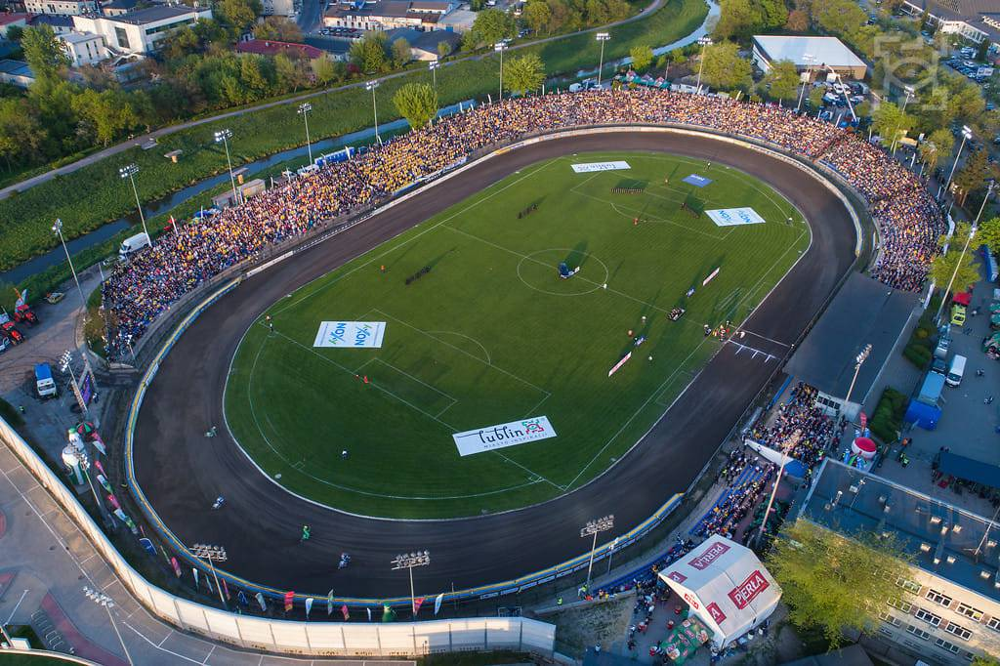

Terminarz
Nasze media społecznościowe


Nasz stadion
Informacje
Motor Lublin to polski klub żużlowy z Lublina, założony w 1978 roku. Klub występuje w rozgrywkach polskiej Ekstraligi żużlowej, najwyższej klasy rozgrywkowej w Polsce. Oto kilka informacji o Motorze Lublin w żużlu:
- Sukcesy: Motor Lublin odnosił wiele sukcesów w swojej historii. Klub zdobył kilkukrotnie tytuł drużynowego mistrza Polski, w tym w latach 1982, 1983, 1985, 1987, 1988 , 1991 i 2022.
- Barwy klubowe: Motor Lublin ma charakterystyczne barwy klubowe - żółto-niebieskie. Te kolory widoczne są zarówno na strojach zawodników, jak i na klubowych flagach i symbolach.
- Rivalizacje: Klub Motor Lublin ma swoje silne rywalizacje z innymi drużynami żużlowymi w Polsce, takimi jak Unia Tarnów, Stal Gorzów Wielkopolski czy Falubaz Zielona Góra. Mecze pomiędzy tymi drużynami często przyciągają dużą publiczność i są obiektem zainteresowania fanów żużla.
- Rozgrywki: Motor Lublin bierze udział w polskiej Ekstralidze żużlowej, gdzie rywalizuje z innymi czołowymi drużynami w kraju. Sezon żużlowy trwa zwykle od wiosny do jesieni i składa się z rundy zasadniczej oraz rundy play-off, w której drużyny walczą o mistrzostwo.
Motor Lublin Aktualny Mistrz Polski
Sezon 2022 na zawsze zapisze się w historii sportu żużlowego w Lublinie jako wyjątkowy niezależnie od sukcesów jakie Motor osiągnie w przyszłości. Lubelska drużyna po raz kolejny napisała na naszych oczach niesamowitą historię. Żadnej drużynie wcześniej nie udało się wywalczyć w jednym sezonie Mistrzostwa Polski Par Klubowych w kategorii zarówno juniorów jak i seniorów. Motor Lublin dokonał tego wyczynu w sezonie 2022. Złoty sezon Motoru to również Drużynowe Mistrzostwo Polski Juniorów ale przede wszystkim wygrana w finałowym dwumeczu PGE Ekstraligi i wywalczenie pierwszego w historii klubu z Lublina Drużynowego Mistrzostwa Polski. Motor sezon zasadniczy przeszedł jak burza. Dość powiedzieć, że przez pierwsze dwanaście meczów Koziołki nie znalazły pogromcy. Dopiero w meczu 13 kolejki Motor zanotował na torze w Częstochowie pierwszą porażkę.
Aktualna tabela ligowa
| Nr | Drużyna | M | Z | R | P | Pkt |
|---|
Autor strony: Marek Dobrowolski IMED 4.1.1